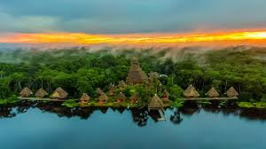
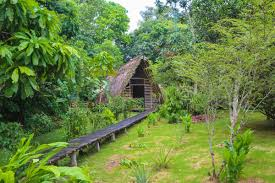

| Parque Nacional Yasuní Uno de los lugares más biodiversos del mundo, ideal para ecoturismo, caminatas en la selva y visitas a comunidades indígenas. |
 |
| Confluencia de los ríos Napo y Coca Hermoso punto natural donde se unen dos grandes ríos amazónicos, ideal para paseos en lancha y fotografía. |
|
| Centro Yaku Kawsay Centro cultural que muestra la sabiduría ancestral de la Amazonía, su biodiversidad y medicina natural. |
 |
| Parque Nueva Esperanza Espacio natural para caminatas, observación de fauna amazónica y contacto con la vegetación selvática. |
 |
| Comunidad Indígena Kichwa – Shiripuno Comunidad amazónica donde puedes vivir costumbres ancestrales, probar su gastronomía y convivir con los pobladores. |